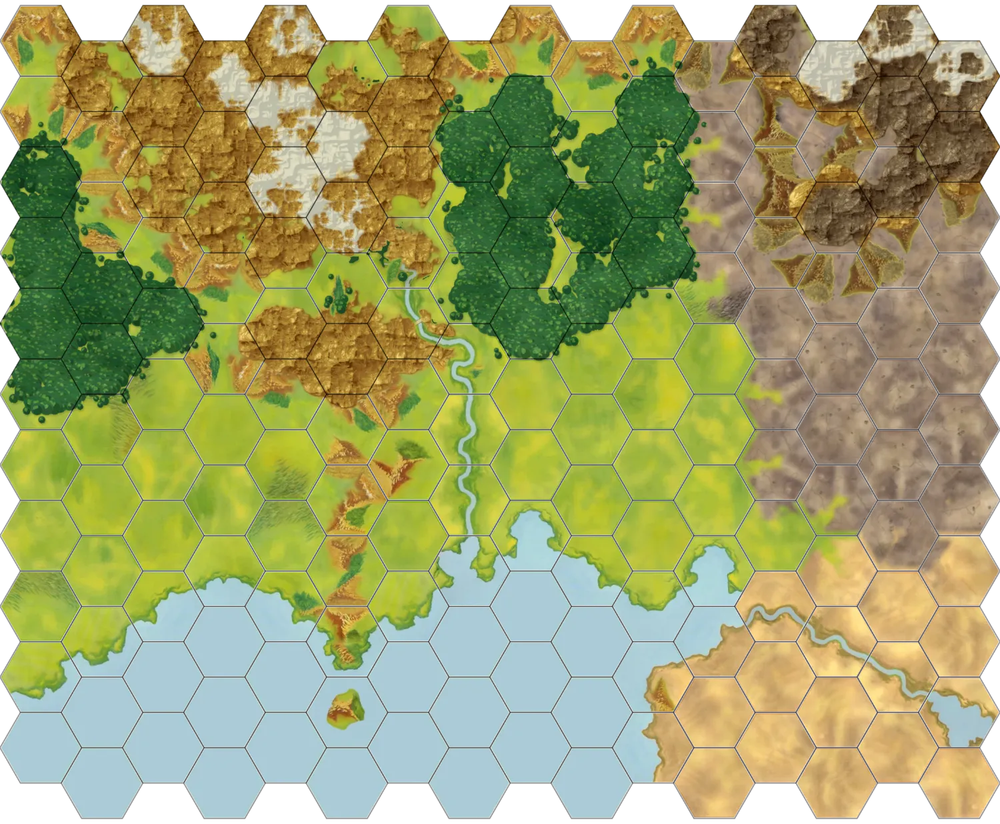

The Regions of Oathmark
Draft — subject to changeThe region names and boundaries below are still being finalized. This map shows the campaign's basic terrain; kingdom borders, holdings, and named regions will be layered in as they're settled.

The lands of Oathmark, in draft form.